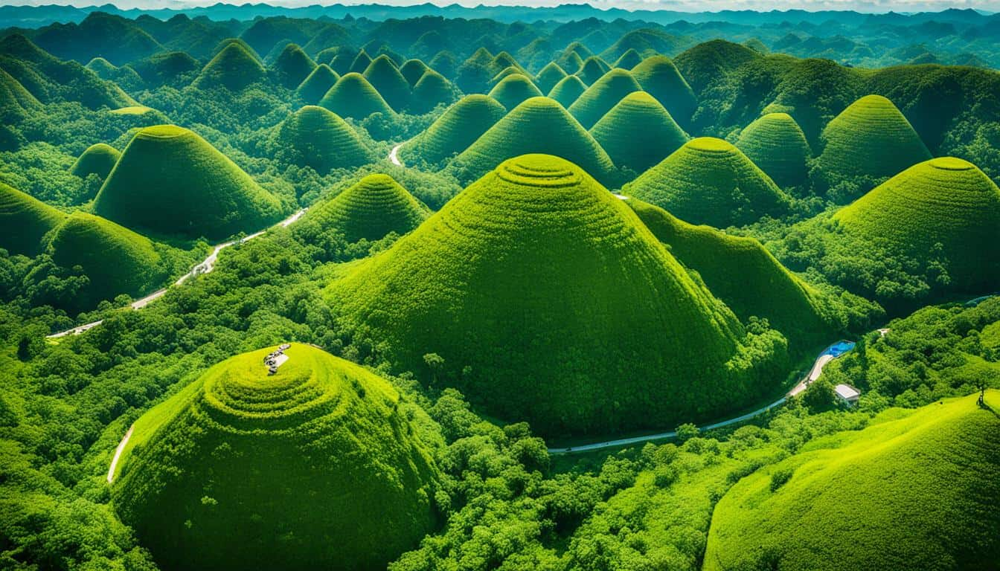
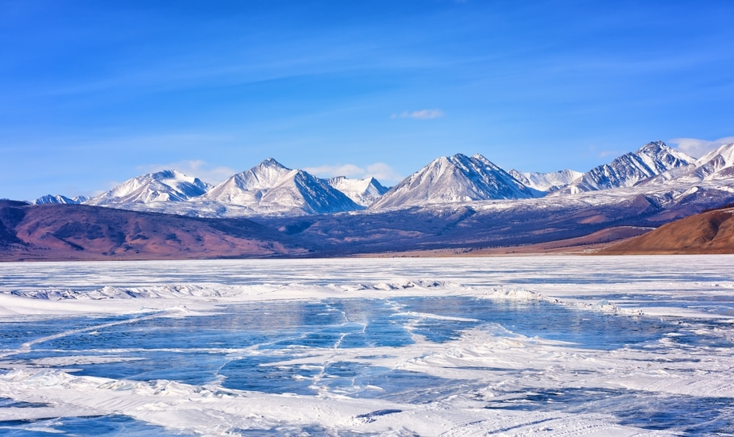

DESTINATIONS
-

SUMMER DESTINATIONS
By Admin on July 5, 2024The Philippines offers stunning summer getaways like the white sands of Boracic, the majestic Chocolate Hills of Bohol, and the vibrant marine life of El lido in Palawan. For surfing, head to the turquoise waters of Siargao. Each destination promises unique experiences and breathtaking landscapes, ensuing an unforgettable summer escape.
-

Tag-Ulan (Wet Season) DESTINATIONS
By Editor on June 28, 2024Explore lush, vibrant destinations like the Bane Rice Terraces, which come alive with verdant greenery. Visit Sagara for its misty mountains, stunning waterfalls, and mysterious caves. Discover the beauty of Lake Cebu, surrounded by lush landscapes and home to the T'boli indigenous people. These destinations offer unique experiences, with few crowds and a chance to see the Philippines in its most natural, flourishing state.